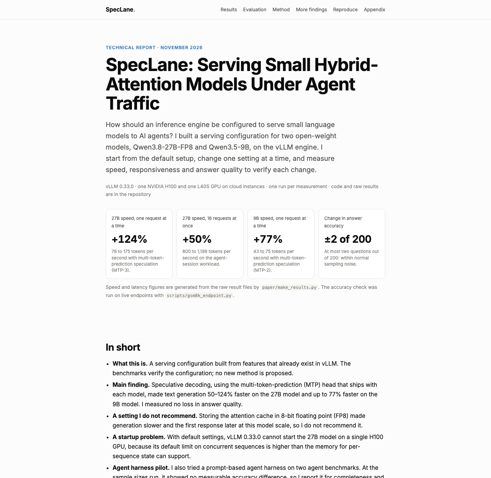
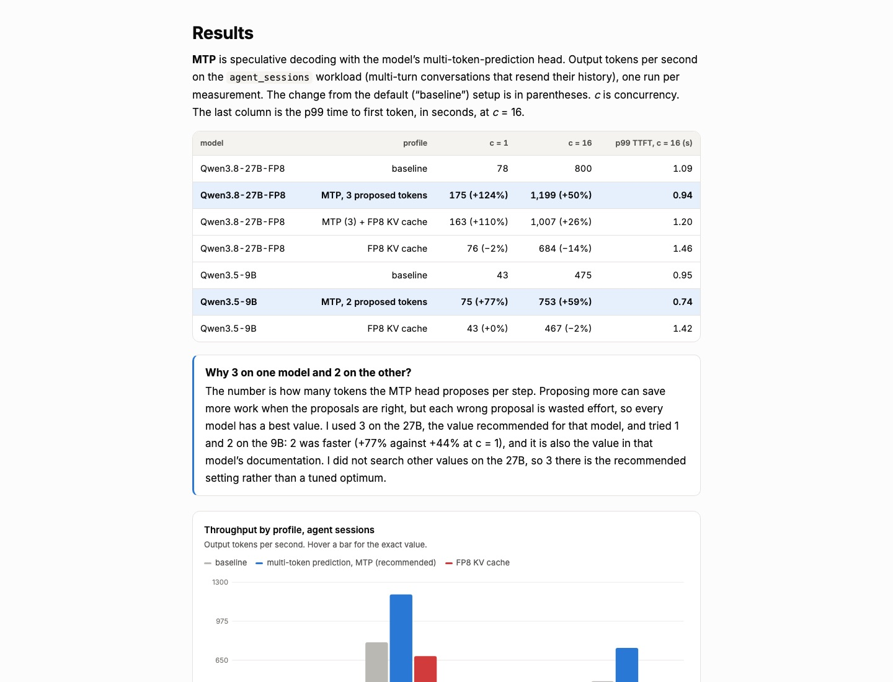

■Demo, screenshots and figures


01What it is
A serving configuration for two open models, Qwen3.8-27B-FP8 on one H100 and Qwen3.5-9B on one L40S, built around agent-shaped traffic: long shared system prompts and multi-turn sessions. It defines a vanilla baseline, a recommended profile, and one change at a time on top of it, with every number generated from the saved run files.
02How it works
- A baseline you can reproduce. Engine defaults plus only the flags needed to start, fixed 16,384-token context.
- Two workloads. shared_prefix and agent_sessions, swept at concurrency 1 and 16 through a closed-loop load generator that records TTFT, TPOT and throughput.
- A quality guard. 200 fixed GSM8K questions, temperature 0, exact match, so a throughput win cannot hide an accuracy loss.
03What it measured
| Profile | c = 1 | c = 16 | p99 TTFT |
|---|---|---|---|
| 27B, baseline | 78 | 800 | 1.09 s |
| 27B, multi-token prediction | 175 (+124%) | 1199 (+50%) | 0.94 s |
| 27B, FP8 KV cache only | 76 (−2%) | 684 (−14%) | 1.46 s |
| 9B, baseline | 43 | 475 | 0.95 s |
| 9B, multi-token prediction | 75 (+77%) | 753 (+59%) | 0.74 s |
The models' built-in multi-token-prediction head is the lever. The FP8 KV cache, which is usually recommended, reduced throughput and raised tail latency at this scale. Quality moved by one and two questions out of 200, inside noise.
04A failure worth keeping
Vanilla vLLM cannot start the 27B on an H100: the default max_num_seqs of 1024 exceeds the 745 recurrent-state cache blocks that fit beside the weights. Setting it to 512 resolves it and became part of the baseline. An earlier agent-harness pilot that scored zero was traced to a missing tool-calling flag, not to the model, and is written up as a withdrawn result.